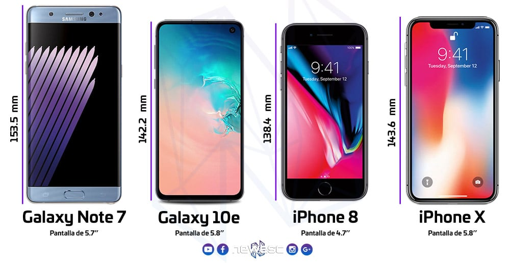

Diseño de Aplicaciones Móviles:
Introducción:
Las expectativas de los usuarios se traducen en valor y confianza. En el espacio móvil, donde el contenido suele ser gratuito, los usuarios suelen tener bajas expectativas debido a las limitaciones del lienzo. Las estructuras del sitio confusas y las velocidades de descarga lentas refuerzan esas bajas expectativas iniciales. El diseño, esa primera impresión, determina desde el principio si el usuario dedicará cinco segundos, cinco minutos o cinco horas a su producto.
Elementos:
Un buen diseño requiere tres habilidades:
1. El don natural para poder saber visualmente cómo debe verse algo que produce una emoción deseada en el público objetivo.
2. La capacidad de manifestar esa visión en algo para que otros vean, usen o participen.
3. Saber cómo utilizar el medio para lograr sus objetivos de diseño.
.jpg)
Contexto:
Se debe asegurar que el usuario pueda descubrir cómo abordar el contexto usando su aplicación. Para lo cual es necesario plantear las siguientes preguntas:
· ¿Quiénes son los usuarios? ¿Qué sabes de ellos? ¿Qué tipo de comportamiento puede asumir o predecir sobre los usuarios?
· ¿Cuándo interactuarán? ¿Están en casa y disponen de mucho tiempo? ¿Están en el trabajo donde tienen cortos períodos de tiempo? ¿Tendrán períodos de inactividad mientras esperan un tren, por ejemplo?
· ¿Por qué utilizarán su aplicación? ¿Qué valor obtendrán de su contenido o servicios en su situación actual?
.png)
Mensaje:
Es la impresión mental general que se crea explícitamente a través del diseño visual. También se puede considerar como la reacción holística o, en ocasiones, instintiva que alguien tendrá ante el diseño. La marca no debe confundirse con los mensajes.
.jpg)
Fijo VS. Fluido:
Otra consideración de diseño es cómo se escalará su diseño a medida que cambie la orientación del dispositivo, por ejemplo, si el dispositivo se gira de modo vertical a horizontal y viceversa. Esto generalmente se describe como fijo o fluido.
.jpg)
Color:
El obstáculo más común que se encuentra cuando se trata de color son las pantallas móviles, que vienen en varios colores o profundidades de bits diferentes, es decir, la cantidad de bits (Dígitos Binarios) utilizados para representar el color de un solo píxel en una imagen de mapa de bits.
.jpg)
Profundidad del Color:
· 12 bits (4.096 Colores): Usado con teléfonos viejos, los artefactos difuminados en las fotos pueden verse fácilmente.
· 16 bits (65.536 Colores): También conocido como HighColor, muy común en los dispositivos móviles de hoy. Puede causar algunos artefactos de bandas y difuminado en algunos diseños.
· 18 bits (262,144 Colores): Se utiliza en dispositivos móviles para ofrecer niveles de True Color mediante difuminado. Se pueden ver bandas limitadas.
· 24 bits (16,7 millones de Colores): También conocido como True Color, admite millones de colores y produce pocas bandas.
.jpg)
Paleta De Colores:
La definición de paletas de colores puede resultar útil para mantener un uso constante del color en el diseño de su dispositivo móvil. Las paletas de colores suelen constar de un número predefinido de colores para utilizar en todo el diseño.
.jpg)
Tipografía:
Tradicionalmente, en el diseño móvil, solo tenía un tipo de letra que podía usar, y esa era la fuente del dispositivo. El único control sobre la presentación fue el tamaño. A medida que los dispositivos mejoraron, también lo hicieron sus fuentes. Las pantallas de mayor resolución permitieron un catálogo de fuentes más sólido que solo la fuente del dispositivo.

Gráficos:
El elemento de diseño final son los gráficos o las imágenes que se utilizan para establecer o ayudar a una experiencia visual. Los gráficos se pueden utilizar para complementar la apariencia o como contenido que se muestra en línea con el texto

Iconografía:
La forma más común de gráficos utilizados en el diseño de dispositivos móviles son los iconos. La iconografía es útil para comunicar ideas y acciones a los usuarios en un espacio visual limitado. El desafío es asegurarse de que el significado del icono sea claro para el usuario.

Fotos e Imagénes:
Las fotos y las imágenes se utilizan para agregar significado al contenido, a menudo mostrando una muestra visual de un concepto o para agregar significado a un diseño. La carga de imágenes más grandes lleva más tiempo y, por lo tanto, le cuesta más al usuario.

Herramientas de Diseño Movil:
El diseño móvil requiere comprender los elementos de diseño y las herramientas específicas. Algunos marcos proporcionan un conjunto de herramientas de interfaz completo, lo que permite a los diseñadores o desarrolladores simplemente armar la interfaz, mientras que otros dejan que el diseñador lo defina desde cero.

Diseñar para el dispositivo adecuado:
Recordemos que estamos trabajando con un medio que evoluciona rápidamente y, aunque puede que no sea posible que todos los usuarios experimenten las cosas exactamente de la manera deseada, ha establecido el tono y la visión de cómo debería verse la aplicación.
Diseñar para diferentes tamaños de pantalla:
Los dispositivos móviles vienen en todas las formas y tamaños. La elección es excelente para los consumidores, pero mala para el diseño. Puede ser increíblemente difícil crear la mejor experiencia posible para una gran cantidad de tamaños de pantalla diferentes.
